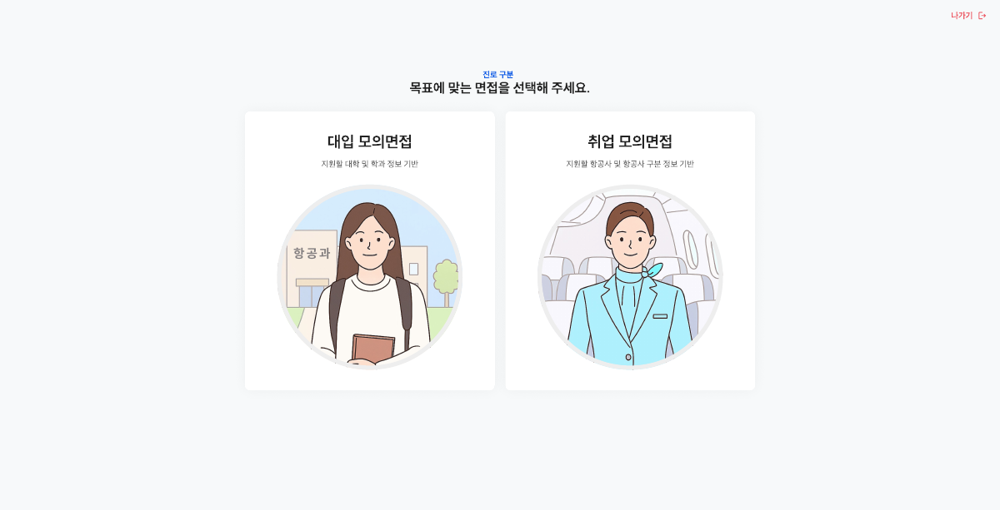
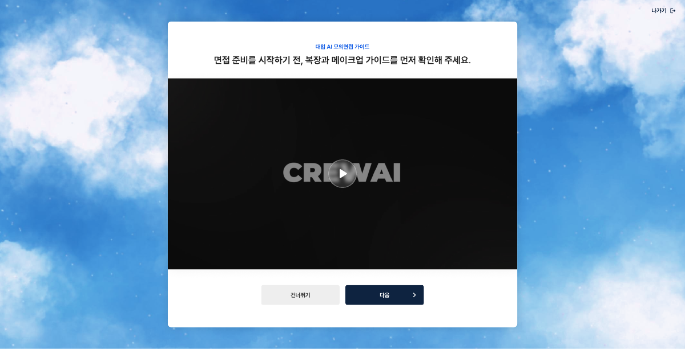

면접왕 (승무원 버전)
승무원 면접 특화 AI 모의면접 플랫폼
프로젝트 개요
면접왕은 입시 면접 준비생들을 위한 맞춤형 AI 대입 모의면접 서비스입니다. 학생들은 입시 준비와 취업 준비 중 선택하여 필요한 면접 연습을 하고, AI 심층 분석으로 개인별 맞춤 피드백과 결과 리포트를 제공받으며 체계적이고 전문적인 면접 준비를 지원합니다.
생활기록부 기반 AI 질문 생성: 학생의 생활기록부를 등록하면 AI가 자동으로 맞춤형 면접 질문을 생성합니다. 초기 5문 정도 소요되며, 필수 약관 확인 및 동의를 통해 질문을 받을 수 있습니다.
학과별 예상질문 제공: 계열 및 학과를 입력하면 해당 학과에 대한 예상 질문을 확인할 수 있습니다. 경영학, 법학, 의학 등 다양한 학과별로 특화된 질문을 제공합니다.
승무원 특화 버전은 대한항공, 아시아나항공 등 항공사 승무원 면접을 준비하는 지원자를 위한 맞춤형 서비스로, CROVAI 가이드와 실시간 AI 분석(외모·화면·얼굴·목소리)을 통해 완벽한 면접 준비를 지원합니다.
담당 역할
프론트엔드 개발 (React + TypeScript)
- React 19 + TypeScript + Vite 기반 SPA 아키텍처 설계
- AI 모의면접 화상 인터페이스 구현
- 실시간 카메라/마이크 권한 및 미디어 스트림 처리
- AI 분석 결과 시각화 및 리포트 대시보드 개발
- 대입/취업 듀얼 모드 UI/UX 설계 및 구현
주요 기능
1. 로그인 & 회원가입
- 이메일 또는 SNS(네이버, 카카오)로 간편하게 회원가입 및 로그인
2. 생활기록부 질문
- 생활기록부 등록: PDF 파일로 생활기록부 업로드
- AI 자동 질문 생성: 업로드한 생활기록부를 기반으로 AI가 분석하여 예상 질문 생성 (초기 5문 소요)
- 동의 필수: 생활기록부 작성 시 필수 약관 확인 및 동의
3. 학과별 질문
- 계열 및 학과 선택: 다양한 계열과 학과별로 특화된 예상질문 확인
- 학과별 맞춤 질문: 경영학, 법학, 의학 등 학과에 대한 예상 질문 제공
4. AI 모의면접
- 실시간 AI 분석: 외모·화면·얼굴·목소리 4가지 요소 실시간 분석
- 면접 영상 녹화: 면접 과정 자동 녹화 및 리플레이
5. MY AI 모의면접
- 개인 맞춤형 면접: 사용자 맞춤 AI 모의면접 진행
6. 결과 리포트
- 심층 분석 리포트: 면접 후 상세 피드백 및 개선점 제공
- PDF 다운로드: 모바일에서 결과 리포트 PDF 다운로드 가능
7. 승무원 특화 기능 (승무원 버전)
- CROVAI 가이드: 승무원 면접 특화 체계적 가이드
- 대입/취업 듀얼 모드: 입시 준비와 취업(승무원) 준비 중 선택 가능
기술 스택
Frontend
React 19, TypeScript, Vite, React Router
Media Handling
WebRTC, MediaStream API, getUserMedia
Backend & Database
Firebase (Authentication, Firestore, Storage)
AI Integration
AI 음성/영상/표정 분석 API
프로젝트 스크린샷


프로젝트 정보
- 개발 기간
- 2025.07 - 2025.09 (2개월)
- 프로젝트 유형
- 상용 서비스 (승무원 특화 버전)
- 팀 구성
- 프론트엔드 개발 (React + TypeScript)
- 주요 성과
-
• 승무원 지원자 대상 실시간 AI 면접 분석 시스템 구현
• CROVAI 가이드 기반 체계적 면접 준비 프로세스 제공
• 외모·화면·얼굴·목소리 4가지 요소 동시 분석 기능